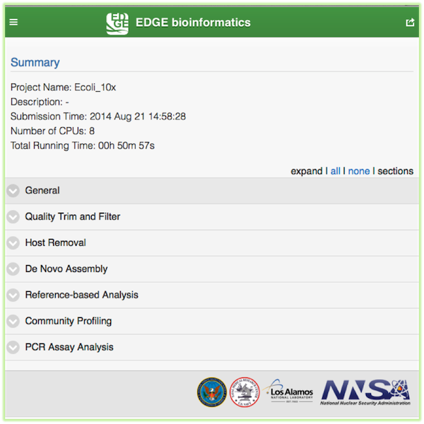

The output directory structure contains nine major sub-directories when all modules are turned on. In addition to the main directories, EDGE will generate a final report in portable document file formt (pdf), process log and error log file in the project main directory.
In the graphic interace, EDGE generates an interactive output webpage which includes summary statistics and taxonomic information ... etc. The easiest way to interact with the results is through the web interface. If a project run finished through the command line, user can open the report html file in the HTML_report subdirectory off-line. When a project run finished, user can click on the project id from the menu and it will generate the interactive html report on the fly. User can browse the data structure by clicking the project link and visualize the result by JBrowse links, download the pdf files, etc.
See http://lanl-bioinformatics.github.io/edge/example_output/report.html
Note
The example link is a demo of graphic output for user to see how it looks like. The JBrowse and links are not accessible in the example link.